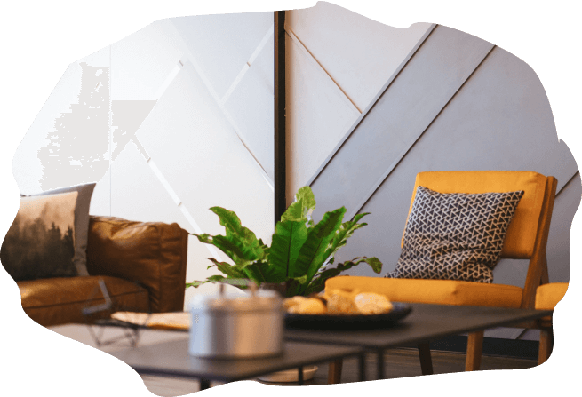

<!DOCTYPE html>
<html lang="en"></html>
<head>
  <meta charset="UTF-8"/>
  <title>Vtishine</title>
  <link rel="stylesheet" href="https://cdnjs.cloudflare.com/ajax/libs/OwlCarousel2/2.3.4/assets/owl.carousel.min.css"/>
  <link rel="stylesheet" href="css/main.css"/>
</head>
<body>
  <div class="head">
    <div class="container">
      <ul class="head__nav">
        <li><a href="">Решения</a></li>
        <li><a href="">Кейсы</a></li>
        <li><a href="">Статьи</a></li>
        <li><a href="">Звукоизоляционные материалы</a></li>
      </ul>
      <div class="head__location">
        <div class="head__location__title">Университетская набережная, 88</div>
      </div>
    </div>
  </div>
  <div class="hero">
    <div class="container">
      <div class="hero__top"><a href="/" class="hero__logo"></a>
        <div class="hero__logo__desc">Продажа материалов. Подбор решения.<br/><span>Звукоизоляция под ключ.</span></div>
        <div class="hero__phone"><a href="tel: +7 (351) 750 39 51">+7 (351) 750 39 51</a>
          <button class="btn__border">Заказать звонок</button>
        </div>
        <div class="hero__city">
          <div class="hero__city__select">Челябинск
            <div class="hero__city__select__arrow"></div>
          </div>
          <div class="hero__city__working">
            <div class="hero__city__working__clock"></div>
            <div class="hero__city__working__title">с 10 до 19:00 (пн-пт);<br/><span>до 16:00 (сб)</span></div>
          </div>
        </div>
      </div>
      <div class="hero__slider owl-carousel">
        <div class="hero__slide">
          <div class="hero__slide__text">
            <div class="hero__slide__title">От 45 000 Р <br/><span>за комнату *</span></div>
            <hr/>
            <div class="hero__slide__desc">Доступная звукоизоляция квартир.<br/><span>* Средняя цена услуги под ключ, гарантия</span></div>
            <button class="btn">Рассчитать для меня</button>
          </div>
          <div class="hero__slide__img"></div>
        </div>
        <div class="hero__slide">
          <div class="hero__slide__text">
            <div class="hero__slide__title">От 45 000 Р <br/><span>за комнату *</span></div>
            <hr/>
            <div class="hero__slide__desc">Доступная звукоизоляция квартир.<br/><span>* Средняя цена услуги под ключ, гарантия</span></div>
            <button class="btn">Рассчитать для меня</button>
          </div>
          <div class="hero__slide__img"></div>
        </div>
        <div class="hero__slide">
          <div class="hero__slide__text">
            <div class="hero__slide__title">От 45 000 Р <br/><span>за комнату *</span></div>
            <hr/>
            <div class="hero__slide__desc">Доступная звукоизоляция квартир.<br/><span>* Средняя цена услуги под ключ, гарантия</span></div>
            <button class="btn">Рассчитать для меня</button>
          </div>
          <div class="hero__slide__img"></div>
        </div>
      </div>
    </div>
  </div>
  <div class="section-1">
    <div class="container">
      <p>Мы «ЗА» спокойную жизнь «В тишине», где приходя домой Вы наконец сможете расслабиться, <br/><span>выспаться и отдохнуть от суеты и повседневных забот.</span></p>
      <p>Звукоизоляция - ключ к решению в вопросах тишины.</p>
    </div>
  </div>
  <div class="section-2">
    <div class="container">
      <div class="section-2__title">Люди ценят нас ЗА</div>
      <div class="section-2__mainimg__wrapper">
        <div class="section-2__item section-2__item-1">
          <div class="section-2__item__title">Качество</div>
          <div class="section-2__item__desc">звукоизолировано за 3 года</div>
          <div class="section-2__item__num">> 15 000 кв.м.</div>
        </div>
        <div class="section-2__item section-2__item-2">
          <div class="section-2__item__title">Опыт</div>
          <div class="section-2__item__desc">произведено работ на</div>
          <div class="section-2__item__num">> 700 объектах</div>
        </div>
        <div class="section-2__item section-2__item-3">
          <div class="section-2__item__title">Надежность</div>
          <div class="section-2__item__desc">Работаем по договору с гарантией</div>
          <div class="section-2__item__num">1,5 года</div>
        </div>
      </div>
    </div>
  </div>
  <div class="section-3">
    <div class="container">
      <div class="section__title">Решим любые проблемы <br/><span>с неприятными источниками шума </span></div>
      <div class="section-3__lists">
        <div class="section-3__list">
          <div class="section-3__list__title">У соседей</div>
          <hr/>
          <ul>
            <li>лай собаки</li>
            <li>перфоратор</li>
            <li>плач грудного ребёнка	</li>
            <li>топот, крики, ругань, застолья за стенкой</li>
            <li>звук работающего телевизора</li>
            <li>игра на пианино и др. музыкальных инструментах</li>
            <li>стоны, скрипы, звуки секса</li>
            <li>звуки при уборке, от работы пылесоса</li>
            <li>вечный ремонт</li>
          </ul>
        </div>
        <div class="section-3__list">
          <div class="section-3__list__title">В своей квартире</div>
          <hr/>
          <ul>
            <li>звуки от стояка</li>
            <li>домашний кинотеатр в другой комнате</li>
            <li>звуки из ванной комнаты</li>
            <li>звуки из туалета</li>
          </ul>
        </div>
      </div>
      <div class="section-3__alert"> 
        <div class="section-3__alert__icon"></div>
        <div class="section-3__alert__text">Если правильно подобрать «пирог» из современных материалов,  эффективность звукоизоляции возрастает от 45 до 90%.<br/><span>Обычно достаточно снизить громкость звуков в 2-3 раза, чтобы Вы перестали их замечать. </span></div>
      </div>
    </div>
  </div>
  <div class="section-4">
    <div class="container">
      <div class="section__title">Звукоизоляция - дело тонкое</div>
      <div class="section__desc">лучше довериться профи для максимального результата</div>
      <div class="section-4__wrapper">
        <div class="section-4__video">
          <iframe width="560" height="315" src="https://www.youtube.com/embed/bZNFRIwlQxQ" frameborder="0" allow="accelerometer; autoplay; encrypted-media; gyroscope; picture-in-picture" allowfullscreen="allowfullscreen"></iframe>
        </div>
        <div class="section-4__form">
          <p>Мы построили 4 комнаты, соответствующие обычной квартире, а также создали имитацию шума, как в многоквартирных домах.</p>
          <p>Заходя в комнату, Вы сами слышите какое из решений Вам подходит. Посмотрите видео, как это работает.</p>
          <div class="section-4__form__title">Запишитесь на демонстрацию заранее, чтобы не ждать в очереди</div>
          <form action="">
            <div class="section-4__form__inputgroup">
              <div class="section-4__form__input">
                <input type="text" placeholder="Укажите телефон"/>
              </div>
              <div class="section-4__form__input">
                <input type="text" placeholder="Удобное время"/><span>пн-пт с 10 до 19, сб с 10 до 16</span>
              </div>
            </div>
            <button class="btn">Хочу на демонстрацию</button>
          </form>
        </div>
      </div>
    </div>
  </div>
  <div class="section-5">
    <div class="container">
      <div class="section__title">Обращайтесь за советом</div>
      <div class="section__desc">и мы подберем оптимальное решение</div>
      <div class="section-5__tabs">
        <div data-tab="soundproofing" class="section-5__tab__wrapper section-5__tab__wrapper__active">
          <div class="section-5__tab">Звукоизолируемые поверхности</div>
        </div>
        <div class="section-5__tab__wrapper">
          <div class="section-5__tab">«Пирог» материалов</div>
        </div>
        <div class="section-5__tab__wrapper">
          <div class="section-5__tab">Выезд замерщика</div>
        </div>
        <div class="section-5__tab__wrapper">
          <div class="section-5__tab">Пример готового решения</div>
        </div>
      </div>
      <div class="section-5__tabs__content">
        <div data-tab="soundproofing" class="section-5__tabs__content-1">
          <div class="section-5__tabs__content-1__items">
            <div class="section-5__tabs__content-1__item">
              <div class="section-5__tabs__content__title">Звукоизоляция пола</div>
              <div class="section-5__tabs__content-1__item__content">
                <div style="background-image: url(img/soundproofing-1.jpg)" class="section-5__tabs__content-1__item__img"></div>
                <ul class="section-5__tabs__content-1__item__list">
                  <li><strong>Избавит Вас от высокочастотного шума:</strong></li>
                  <li>детский плач, лай маленькой собаки, стоны, скрипы</li>
                  <li><strong>Толщина:</strong></li>
                  <li>3-5 см</li>
                  <li><strong>Эффективность:</strong></li>
                  <li>45-55 %</li>
                </ul>
              </div>
            </div>
            <div class="section-5__tabs__content-1__item">
              <div class="section-5__tabs__content__title">Звукоизоляция потолка</div>
              <div class="section-5__tabs__content-1__item__content">
                <div style="background-image: url(img/soundproofing-2.jpg)" class="section-5__tabs__content-1__item__img"></div>
                <ul class="section-5__tabs__content-1__item__list">
                  <li><strong>Избавит Вас от среднечастотного шума:</strong></li>
                  <li>звуки телевизора, крики женщин, фортепиано</li>
                  <li><strong>Толщина:</strong></li>
                  <li>8,5 см</li>
                  <li><strong>Эффективность:</strong></li>
                  <li>65-70 %</li>
                </ul>
              </div>
            </div>
            <div class="section-5__tabs__content-1__item">
              <div class="section-5__tabs__content__title">Звукоизоляция стен</div>
              <div class="section-5__tabs__content-1__item__content">
                <div style="background-image: url(img/soundproofing-3.jpg)" class="section-5__tabs__content-1__item__img"></div>
                <ul class="section-5__tabs__content-1__item__list">
                  <li><strong>Избавит Вас от среднечастотного шума:</strong></li>
                  <li>лай собаки, басгитара, вечеринки соседей</li>
                  <li><strong>Толщина:</strong></li>
                  <li>6,5 см</li>
                  <li><strong>Эффективность:</strong></li>
                  <li>85 - 90%</li>
                </ul>
              </div>
            </div>
          </div><br/>
          <p>В большинстве случаев достаточно выявить и точечно звукоизолировать проблемные поверхности, а при звукоизоляции на этапе ремонта-смежные стены c cоседями и потолки в спальных зонах . Если вы делаете ремонт, достаточно добавить 1-2 слоя материалов и несколько дополнительных операций-это в 2-3 раза выгоднее , чем в последствии делать звукоизоляцию заново. В квартирах с ремонтом применяем инструмент с минимальным пыли образованием и заберем мусор после монтажа, предварительно согласовав.</p>
          <p>В большинстве случаев достаточно выявить и точечно звукоизолировать проблемные поверхности, а при звукоизоляции на этапе ремонта-смежные стены c cоседями и потолки в спальных зонах . Если вы делаете ремонт, достаточно добавить 1-2 слоя материалов и несколько дополнительных операций-это в 2-3 раза выгоднее , чем в последствии делать звукоизоляцию заново. В квартирах с ремонтом применяем инструмент с минимальным пыли образованием и заберем мусор после монтажа, предварительно согласовав.				</p>
        </div>
      </div>
    </div>
  </div>
  <div class="calc">
    <div class="container">
      <div class="section__title">Расчитайте стоимость звукоизоляции под ключ</div>
    </div>
  </div>
  <script src="https://code.jquery.com/jquery-3.4.1.min.js"></script>
  <script src="https://cdnjs.cloudflare.com/ajax/libs/OwlCarousel2/2.3.4/owl.carousel.min.js"></script>
  <script src="js/main.js"></script>
</body>